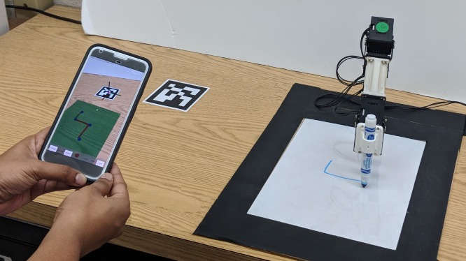

<!DOCTYPE HTML>
<!--
	TXT by HTML5 UP
	html5up.net | @ajlkn
	Free for personal and commercial use under the CCA 3.0 license (html5up.net/license)
-->
<html>
	<head>
		<title>Project 3</title>
		<meta charset="utf-8" />
		<meta name="viewport" content="width=device-width, initial-scale=1, user-scalable=no" />
		<link rel="stylesheet" href="assets/css/main.css" />
	</head>
	<body class="is-preload">
		<div id="page-wrapper">

			<!-- Header -->
				<header id="header">
					<div class="logo container">
						<div>
							<h5>  <a href="javascript:history.back()" class="button" > Go Back </a> </h5>
						</div>
					</div>
				</header>


				<article id="project1" class="wrapper style1" >
					<div class="container">
						<div class="row">
							<div class="col-4 col4-small col-12-medium">
								<br> 
								<br> 
								<br>
								<span class="image fit"></span> <br>
								<a href="http://engineering.nyu.edu/mechatronics/videos/artoolpath.html" ><span class="label">Video</span></a></li> <br>
								<!-- <a href="https://ieeexplore.ieee.org/abstract/document/8956466" ><span class="label"> Publication </span> </a> -->
							</div>
							<div class="col-3 col-8-large col-12-medium">
									<!-- <header> -->
									<h2> <strong> Abstract </strong></h2>
									<!--</header> -->
								<p style="text-align:justify"> Robot manipulators are widely used in industries to automate myriad operations. To address the demand shifts in industries, automated systems
									such as robots must flexibly adapt in response. Such dynamics often necessitate end-users to reprogram robots to meet the changing industry
									needs. This leads to a demand for experienced programmers, familiar with proprietary robot software. As one alternative, an augmented reality
									(AR) framework can offer a user-friendly solution that permits end-users to reprogram robots without any domain expertise. This paper presents
									an AR teaching (ART) methodology that allows end-users to program varied manipulators in an intuitive and effortless manner for tool-path
									teaching. The ART method is contrasted with an alternative kinesthetic teaching method for its performance and user experience. Results show
									that the ART method yields a convenient and time-ecient teaching method and it is recommended by users over the kinesthetic teaching method. </p>
									<p> Go to Home page </p>
									<a href="index.html" class="button"> Home</a>
							</div>
						</div>
					</div>
				</article>

		</div>	

	</body>
</html>